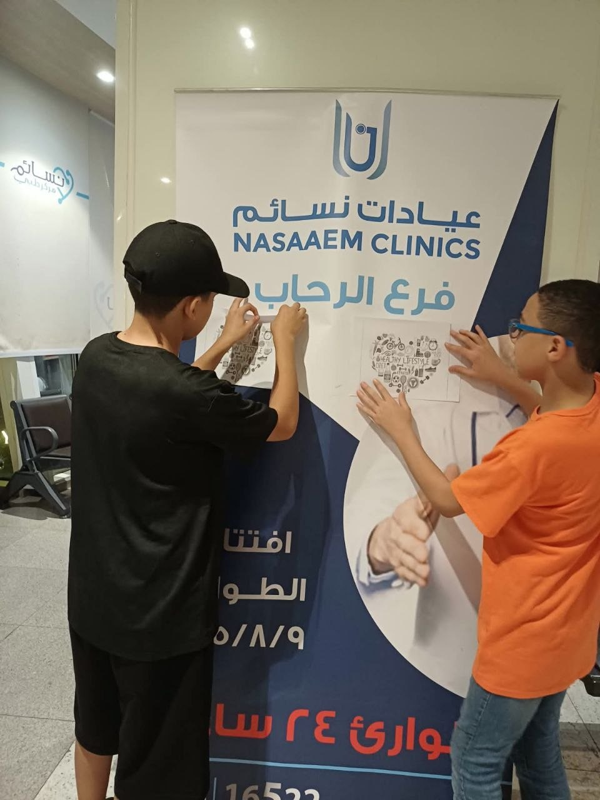
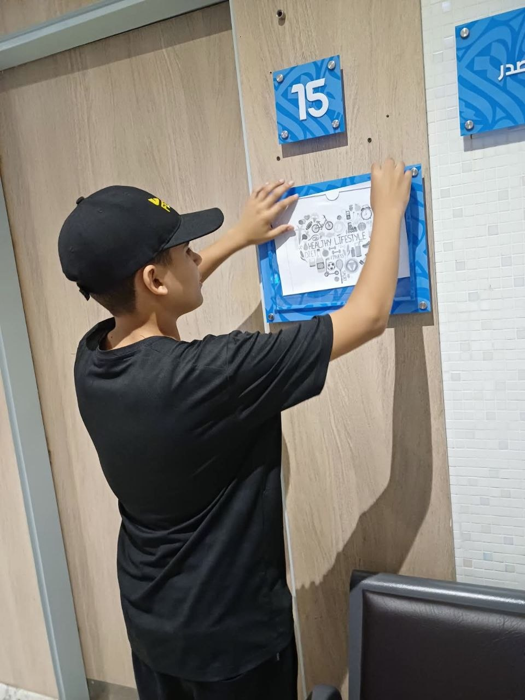
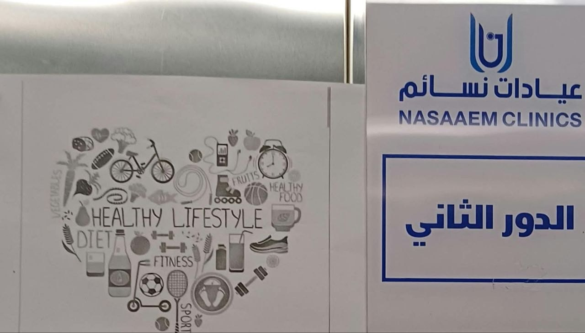

| Topic | Page Number |
|---|---|
| Social Media Collaborators | 1 |
| Timeline | 2 |
| What We Did | 3 |
September 1:3 Brainstorming
September 3:4 Planning
September 4:5 Social Media Creation
September 5:10 Working on PowerPoint, word and booklet
1. Chose Environmental Conservation
2. Researched Facts About health
3. Created Instagram Account with logo
4. Made Educational Posts
5. Created Presentation



Social Media collaborators:
1) Mohamed Talat
2) Adham Amr
3) Malek Asfour
4) Youssef Khaled
5) Youssef Osman
6) Malek Shafi
7) Mohamed Farouk